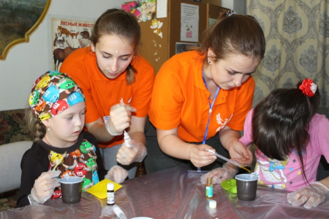

Родителям и опекунам
«Феникс» — это ежегодная программа в Кураске, которая заключается в регулярных реабилитационных лагерных сменах для детей и подростков, попавших в трудную жизненную ситуацию или перенесших тяжелые заболевания. На программах мы используем лучшие методики, которые применяют в реабилитпционных лагерях, как за рубежом так и в России.
Чтобы принять участие в программе, необходимо подать заявку (кнопка для перехода на заполнение анкеты) на одну из предстоящих смен. Список имен будет предоставляться, и обновляться на сайте по мере заключения договора с лагерными базами нашего города. Следите за новостями, чтобы быть в курсе событий.
Набор на программу начинается за 6 месяцев до ее начала. Наши координаторы свяжутся с вами для подтверждения возможности участия ребенка в выбранной программе. Далее вам будет необходимо заполнить анкету участника и предоставить обязательный пакет документов:
- Медицинский полис
- Справку об отсутсвии контактов с инфенционными больными
- Копию свидетельства о рождении ребенка/паспорта
- Копию первой страницы паспорта родителя или опекуна
Документы предоставляются координатором по электронной почте fenix.program@yandex.ru
Если документы не были переданы координаторам в указанный ранее срок, заявка на участие в данной реабилитационной программе аннулируется.
Что происходит на программах?
Реабилитационная программа длится 9 дней в осенне-весенний период и 21 день в летний. Ребята находятся в лагере без родителей, опекунов и сопровождающих. У «Феникса» есть множество отличий от обычного лагеря, на которые стоит обратить внимание:
- Ребята деляться на небольшие комады (6-10 человек) и на каждой команде работает 3-4 волонтера-вожатых;
- На программах работает врач;
- Вожатые (ники), психологи и мастера — это волонтеры, то есть люди, которые приехали потому, что действительно хотят помочь;
- Чтобы попасть на программу, волонтеры проходят собеседование и обязательное обучение.

Прежде всего, в лагере создается атмосфера физической и психологической безопастности для ребенка, ведь только в такой обстановке, при поддержке волонтеров он может попробовать что-то новое, сделать открытие в себе и стать смелее!
Программа смены разработа таким образом, что за время ребенок много раз сталкивается с новыми интересными возможностями — вызовами — будь-то, выступление на сцене или изготовление собственного мыла, новые знакомства или самостоятельно принятое решение. Волонтеры поддерживают ребят в каждой ситуации и незаметно для детей, помогают им стать смелее, увереннее в себе и самостоятельнее.
Как проходит день в Фениксе?
Каждый день ребята участвуют в различных творческих мастер классах (декупаж, мыловарение и др.), активных занятиях (стрельба из лука, знакомство с животными и др.), а также командных развивающих мероприятиях, которые организуют по системе терапевтического отдыха — уникальной методике, доказавшей свою эффективность в реабилитационных лагерях во всем мире.
Разнообразные занятия помогают каждому ребенку выразить себя и обнаружить, что он может намного больше, чем думал. Развивавающие мероприятия помогают улучшить когнитивные способности ребенка, коммуникативные навыки, а также способствуют получению новых знаний и расширению кругозора. В течении всего дня на каждой мастерской рядом с детьми находиться мастера и вожатые (ники) и психологи, которые готовы поддержать, воодушевить и прийти на помощь.
Вечером всех ждет общее событие — концерт, ярмарка, дискотека или сюрприз, которое организуют для ребят волонтеры. Перед сном каждая команда собирается в домике на вечерний ритуал — «шепталка», на котором ребята делятся впечатлениями о прошедшем дне.
Наш типовой день
| Время | Мероприятие |
|---|---|
| 8.30 | Подъем |
| 8.45 | Зарядка |
| 9.00-9.30 | Завтрак |
| 9.40-11.00 | Линейка |
| 11.00-11.30 | Общелагерная игра |
| 11.30-12.45 | Мастерские |
| 13.00-14.00 | Обед |
| 14.00-15.30 | Тихий час |
| 15.30-16.00 | Полдник |
| 16.00-16.45 | Мастерские |
| 17.30-18.45 | Мастерские |
| 19.00-19.30 | Ужин |
| 20.00-21.30 | Вечернее мероприятие |
| 21.40-22.10 | Шепталка |
| 22.30 | Отбой |
Подготовка к поездке
Получив от нас приглашение, отправив все документы, можно смело собирать ребенка в лагерь! Чтобы смена прошла максимально комфортно и никакие непредвиденные обстоятельства не отвлекли от программы, мы советуем заранее подготовиться к поездке.
Прежде всего, необходимо начать с вещей. Мы составили список того, что будет необходимо ребенку на смене:
- Нижнее белье, носки (на каждый день);
- Пижама или одежда для сна;
- Обувь: сезонную обувь (основную пару), спротивные ботинки (кроссовки), домашнюю обувь, резиновые сапоги (весна\лето), резиновые шлепки (для похода в душ);
- Несколько футболок, свитер/пуловер/толстовку;
- Брюки/джинсы/спортивные штаны, шорты (в теплое время);
- Ветровку;
- Средства личной гигиены (гель для душа/мыло, мочалка, шампунь, зубная паста, щетка);
Мы стараемся сделать смену яркой и насыщенной, поэтому дети 24/7 заняты лагерными делами. То, что им точно не понадобиться:
- Гаджеты и техника (ноутбуки, планшеты, мобильные телефоны) — общение через интернет и так достаточно в нашей повседневной жизни. На программе мы общаемся в реальности, да и там просто нет времени, чтобы пользоваться гаджетами;
- Деньги и банковкие карты (ребенку не нужны деньги: здесь нет магазинов или мест, где их можно было бы потратить);
- Ценности (у нас нет сейфов, чтобы ребенок или вы не боялись, что какая-то ценная вешь будет утеряна, лучше просто оставить ее дома);
- Одеяла, постельное белье (все это каждый ребенок получает при заеде, постельное белье заменяется по мере необходимости).
Категорически запрещено привозить на смену
- Алкоголь;
- Сигареты;
- Ножи, опасные острые предметы или другие виды оружия.
Связь с ребенком во время смены
На смене дети не пользуются своими мобильными телефонами (это действительно так), однако это не значит, что в течении смены вы не сможете связаться с ребенком, а он с вами. Да, как и в реабилитационных лагерях во всем мире, мы ограничиваем количество общения детей с родителями или друзьями за пределами лагеря (именно поэтому мы не разрешаем ребятам пользоваться планшетами или копмьютерами), чтобы ребенок мог полностью погрузиться в программу, отвлечься от привычных схем действия и увидеть себя по-новому.
Если ребенок хочет поговорить с вами
У старшего вожатого в команде вашего ребенка будет мобильный телефон. С этого телефона ребенок может будет связываться с вами. Обычно детям предлагают звонить домой через день (один день девочки, другой мальчики). Иногда дети звонят реже, потому что очень увлечены происходящем в лагере и общением с другими ребятами. Важно понимать, что ребят на смене много, поэтому следите, чтобы ваш разговор длился не более 3 минут.
Если вы хотите что-то узнать о ребенке
Случается так, что ребенок может не звонить, но это не повод паниковать, а как раз наоборот, это значит, что он чувствут себя хорошо и увлечен происходящим.
Но мы понимаем, что вы тоже скучаете и волнуетесь. Поэтому каждый день наши координаторы будут присылать вам смс-сообщение с коротким рассказом о том, чем сегодня занимался ваш ребенок.
Если же у вас возникнут вопросы, то вы сможете задать их старшему нику (вожатаму):
- Напишите смс с вопросом на номер, который получите в день заезда, а в свободное время координатор перезвонит вам и все расскажет. Обратите внимание: координатор не может в любой момент ответить на ваш вопрос, он сделает это в тот момент, когда не будет занят с ребятами.